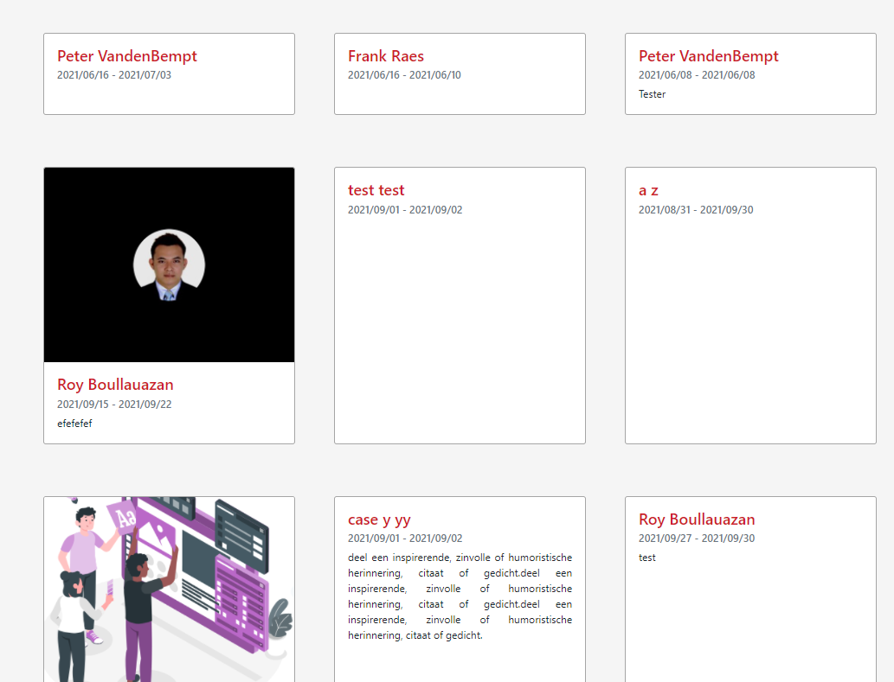
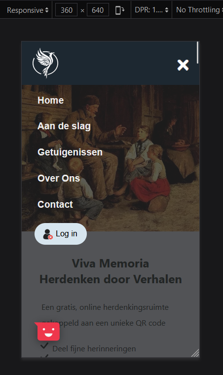

Reflectieverslag, week 14
10/01/2022 - 14/01/2022Deze week was een productieve week. Ik heb al mijn kennis van bijna 4 maanden gebruikt om de manier van mijn voorgeschreven codes revolutionar te veranderen en te verbeteren.
Het was een drukke week geweest. Elke avond na het werk hadden we een vergadering met onze mentoren.
Volgende taken heb ik gedaan:
- een betere oplossing voor verborgen title onder sticky navbar
- Authenticatie pagina aangepast en ook responsief voor alle devices
- zoeken hoe Sendinblue SMTP account te activeren
- onderzoek hoe zoekbalk met een filter kunnen te combineren
- implementatie zoek-resultaten pagina
- implementaie "beheer pagina's" pagina
- verbetering van foto-view en kleuren
- implementatie herdenkingsruimtes
- onderzoek voor hoe firstname en lastname kunnen concateneren om in een query kunnen te gebruiken
- verbetering van verchillelnde sections in elk pagina
- "beheer pagina's" knop toegevoegd in de navbar
- test van funcionaliteit
- media query px's verbeterd
- homepagina helemaal verbeterd en volledig responsief voor alle devices
Maandag:
-
een betere oplossing voor verborgen title onder sticky navbar
Er was een probleem. Als men op een title clickt werd redirected naar de uitleg van de title maar de title ging onder sticky navbar staan. Als tijdelijke oplossing had ik vorige keer een foto gezet boven elk title. Zo was er voldoende plaats tussen de navbar en de title en elk title kreeg een foto dat eigenlijk niet nodig was en aan de andere kant gaat de website door veel onnodige foto's zwaar worden) Met de nieuwe oplossing zijn de foto's verwijderd en er is ook voldoende plaats tussen elk section.
-
Authenticatie pagina aangepast en ook responsief voor alle devices
web versie mobile versie -
zoeken hoe Sendinblue SMTP account te activeren
SMTP mail provider op Auth0 weer geactiveerd maar kreeg een error voor foute username (omdat in de dashbord van Sendinblue geen vaste username aanwezig was). Aangezien het een lage perioriteit heeft zal mijn mentor zelf een oplossing (in zijn perioriteit) ervoor vinden.
-
implementatie herdenkingsruimtes beginnen
Dinsdag:
-
onderzoek hoe zoekbalk met een filter kunnen te combineren
Momenteel is niet geimplementeerd geworden.
-
implementatie zoek-resultaten pagina
Deze pagina gaat zichtbar worden nadat men een zoek term gaat toevoegen in de "alle herdenkingsruimtes" pagina.
mobile versie -
implementaie "beheer pagina's" pagina
oude versie 
nieuwe versie (met nieuwe hover effect) 
Woensdag:
-
verbetering van foto-view en kleuren
-
implementatie herdenkingsruimte voltooid
oude versie nieuwe versie -
onderzoek voor hoe firstname en lastname kunnen concateneren om in een query kunnen te gebruiken
Probleem met concatenatie van firstname en lastname door een query. Ik heb veel gezocht om het te oplossen maar het lukte niet. Daarvoor heb ik voorgesteld dat we een extra column in database gaan maken en concatenatie op server te maken ipv via een query, dan kunnen we het later gebruiken.
Donderdag:
-
navbar verbeteerd, ook responsief voor alle devices
web versie mobile versie  -
"beheer pagina's" knop toegevoegd in de navbar
-
beginnen met verbetering van homepagina
-
test van funcionaliteit
Vrijdag:
-
hero section verbeterd ok responsief voor alle divices
In eerste versie heeft de zoekbalk hetzelfde design maar was vervormd en de knoppen hadden niet gelijk hetzelfde design en de mobile versie had geen mooie view.
web versie 
mobile versie -
correcte px's voor media queries gevonden
Om een website responsief te kunnen maken mogen we "media queries gebruiken. Voor elk pagina probeerde ik om het ook voor alle divices responsief te maken, maar het lukte niet altijd bij één px. Bvb. voor mobile versie (landscape phones) gebruikte ik @media (min-width: 576px) and (max-width: 767px){} maar voor 575px kon geen correcte design ontvangen (omdat het een oude manier van media query schrijven was) en volgens mijn onderzoek had het geen probleem. Ik mocht ook niet @media (min-width: >=575px) and (max-width: 767px){} schrijven.
Uiteindelijk ben ik tot deze idee gekomen om media queries zo te schrijven:
/* portrait phones */ @media (max-width: 575px) { } /* landscape phones */ @media (min-width: 575px) and (max-width: 767px){ } /* tablets */ @media (min-width: 767px) and (max-width: 991px){ } /* large */ @media (min-width: 991px) and (max-width: 1200px) { } /* xlarge
<14" */ @media(min-width: 1200px) and (max-width: 1490px) { }Het probleem werd opgelost.
Daarna met deze oplossing heb ik alle media queries (voor alle pagina's) aangepast.
-
de hele homepagina (alle aparte sections) verbeterd en responsief gemaakt voor alle devices.